Session 2 · where we stopped
Last time: we need $q$ close to a posterior we cannot compute

A decoder plus a prior is a probability model: $p(z)\,p_\theta(x\mid z)$.
Training it needs $p_\theta(x) = \int p(z)\,p_\theta(x\mid z)\,dz$: intractable.
So does the posterior $p_\theta(z\mid x)$, the shaded patch for our 3.
Variational idea: a simple Gaussian $q$ (purple), pulled close to it.
Today: how to measure "close" (KL), the loss that does the pulling (the ELBO), and the VAE.
Part 4 of 7
KL divergence: how far apart are two distributions?
We want $q$ close to the posterior. Before two clouds in a plane, the simplest possible pair: two bar charts over the digits 1 and 7. Slowly, from a betting game.
- ✓Distributions and fitting
- ✓Autoencoders
- ✓The probabilistic view
- 4KL divergence
- 5Variational inference and the ELBO
- 6Reparameterisation
- 7The VAE on MNIST
Two distributions over the same two outcomes
The data says 80/20. The model says 60/40.
$P$: the data
$Q$: our model
A dataset of 1s and 7s, 80% 1s. The model believes 60/40. How wrong is it, as one number?
A betting game
Which model makes the real data more likely?
Ten digits from the data: eight 1s, two 7s. Each model gives each digit a probability; multiply them.
The truth wins, by a factor of $0.0067 / 0.0027 = 2.5$. KL will measure this gap, per digit.
Products of many small numbers are awkward
Surprise $= -\log p$, and why the log
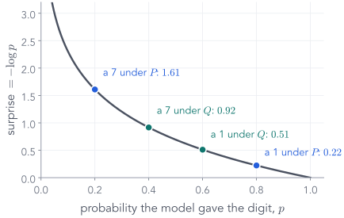
What should "surprise" do?
1 · a certain event: no surprise. $-\log 1 = 0$.
2 · rarer means more surprising. $-\log p$ grows as $p$ shrinks.
3 · two independent digits: probabilities multiply, surprises should add. Only the log turns products into sums.
So the betting-game product becomes a sum of surprises, one per digit. Natural log, so the unit is the nat.
Our two digits, scored both ways
The surprise table
| outcome | $P$ | $Q$ | surprise if you believe $P$ | surprise if you believe $Q$ |
|---|---|---|---|---|
| a 1 | 0.8 | 0.6 | $-\log 0.8 = 0.223$ | $-\log 0.6 = 0.511$ |
| a 7 | 0.2 | 0.4 | $-\log 0.2 = 1.609$ | $-\log 0.4 = 0.916$ |
Average surprise, when you believe the truth
Entropy: $H(P) = 0.500$ nats per digit
The weights are how often each digit really appears: eight in ten, two in ten. The batch of ten digits from the game, averaged.
Even the perfect model is surprised by 0.500 nats per digit on average: the data are random.
Same data, a different scorer
Cross-entropy: $H(P, Q) = 0.592$ nats per digit
Still weighted by $P$
the digits still come from the real data: eight 1s, two 7s.Scored by $Q$
each digit's surprise now uses the model's probability.Believing the wrong model costs more surprise on the same data: 0.592 instead of 0.500.
The extra surprise
KL divergence = cross-entropy − entropy
together: $H(P, Q) = 0.592$ (more precisely $0.5004 + 0.0915 = 0.5919$)
KL is the part of the surprise that comes only from using the wrong model.
Digit by digit, and back to the game
Where the 0.092 comes from
| digit | how often $P_i$ | extra surprise $\log(P_i/Q_i)$ | contribution |
|---|---|---|---|
| a 1 | 0.8 | $\log(0.8/0.6) = 0.2877$ | $0.2301$ |
| a 7 | 0.2 | $\log(0.2/0.4) = -0.6931$ | $-0.1386$ |
| KL | $0.0915$ |
One row is negative: $Q$ over-predicts 7s, so a 7 surprises it less. The total is still positive, and it is exactly the betting-game gap, per digit.
Notation we will use all lecture
$\E$ means "average over"
Why KL can never be negative
One picture: $\log r$ lies under its tangent
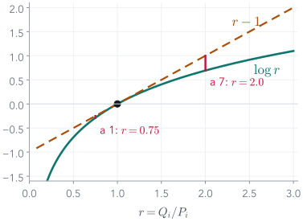
Let $r = Q_i / P_i$. The curve $\log r$ never rises above the line $r - 1$.
Equality only when every $r_i = 1$: $Q = P$. No model beats the truth on the truth's own data.
What the number means
KL is how fast evidence piles up
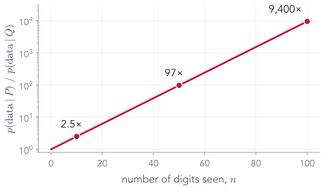
After 10 digits the truth is 2.5× more likely; after 50, 97×; after 100, 9,400×.
A small KL means the two models are hard to tell apart from data; a large one means a few samples settle it.
Not a distance
Swap the arguments, get a different number
$0.105 \neq 0.092$: KL is not symmetric. "How wrong is $Q$ about $P$" differs from "how wrong is $P$ about $Q$".
Push $q \to 0$ and $\KL(P\|Q) \to \infty$. Never give zero probability to something that happens.
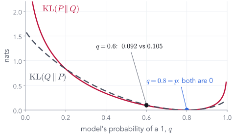
The order matters, sharply
A model that "forgets" 7s
Truth $P = (0.8, 0.2)$. A model $Q' = (0.99, 0.01)$ that almost never expects a 7.
$\KL(P\|Q)$ punishes a model for giving tiny probability to things that really happen.
Why training code says "cross-entropy"
Cross-entropy = entropy + KL
Lowering cross-entropy can only lower the KL part. So does maximum likelihood: it minimises $\KL(\text{data}\,\|\,\text{model})$.
The version the VAE needs
KL between two bumps: an area
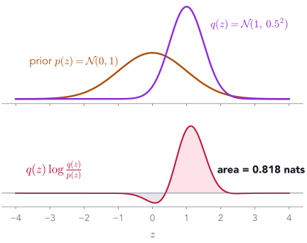
For continuous variables the sum becomes an integral:
Take a toy cloud $q = \N(1, 0.5^2)$ and $p = \N(0,1)$, the prior. (Our 3's real $q$ is far narrower: Part 7.)
The shaded area, computed numerically, is 0.818 nats.
Can we get 0.818 without a computer? Yes: for two Gaussians the integral has a formula. Two steps.
Gaussian KL, step 1 of 2
Write out the log of the ratio
Three terms. Next: average each one over $z \sim q$.
Gaussian KL, step 2 of 2
Average each term over the cloud $q$
Per coordinate: moving the mean costs $\tfrac12\mu^2$; a width other than 1 costs $\tfrac12(\sigma^2 - 1 - \log\sigma^2)$, zero only at $\sigma = 1$. Several coordinates: add one term each.
Back to our two bumps
Fit one Gaussian: the KL direction decides what you get
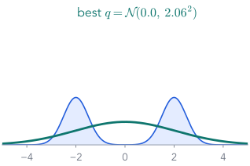
minimise $\KL(\text{data}\,\|\,q)$: cover everything.
Part 1's maximum-likelihood fit, with infinite data.
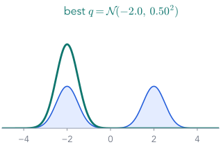
minimise $\KL(q\,\|\,\text{data})$: never put mass where
data is absent, so pick one bump.
Mode-covering vs mode-seeking. Variational inference will minimise $\KL(q\,\|\,\text{posterior})$: the second kind.
End of Part 4
What we did, and what comes next
What we did
- Surprise $= -\log p$; entropy = average surprise under the truth.
- Cross-entropy = the same data scored by a model; KL = the extra.
- $\KL \ge 0$, zero only when the two match, not symmetric.
- For Gaussians: $\tfrac12(\mu^2+\sigma^2-1-\log\sigma^2)$ per coordinate.
Next: make $q$ close to the posterior
Minimise $\KL(q\,\|\,p_\theta(z\mid x))$. It contains the intractable $p_\theta(x)$; Part 5 rearranges it into a loss that does not.
Part 5 of 7
Variational inference, and the ELBO
Part 3 wanted a simple $q$ close to the posterior of our 3. Part 4 gave a number for "close". Write the goal down: one rearrangement turns it into a loss we can compute, the ELBO. Then run it, and see why it leads to an encoder.
- ✓Distributions and fitting
- ✓Autoencoders
- ✓The probabilistic view
- ✓KL divergence
- 5Variational inference and the ELBO
- 6Reparameterisation
- 7The VAE on MNIST
The goal, written down
Find the $q$ with the smallest KL to the posterior
$\mathcal Q$: the shapes we allow
Diagonal Gaussians. For our 2-number code: 4 numbers, a centre $m$ and two widths $s$.Why $q$ first?
KL averages under its first argument. $q$ is ours, so we can draw from it. The other order would need draws from the posterior: the thing we cannot get.The catch
$p_\theta(z\mid x) = p_\theta(x,z)\,/\,p_\theta(x)$, and $p_\theta(x)$ is the integral we cannot do. We cannot even evaluate this KL.Four short moves get $p_\theta(x)$ out of the way.
From the KL to the ELBO · move 1 of 4
Write out the KL
From the KL to the ELBO · move 2 of 4
Bayes: the posterior is the joint over the evidence
The joint $p_\theta(x,z) = p(z)\,p_\theta(x\mid z)$ is easy: prior times decoder. All the difficulty is now in one number.
From the KL to the ELBO · move 3 of 4
Move the evidence to the other side
Why "Evidence Lower BOund"? The last move.
From the KL to the ELBO · move 4 of 4
The KL is never negative, so the ELBO is a lower bound
Our 3, two choices of $q$. The right end, $\log p_\theta(x)$, is fixed by the model; it does not move when $q$ changes.
the prior
inference (next slides)
The total cannot move, so raising the ELBO must shrink the KL: maximise the ELBO and $q$ approaches the posterior, without ever computing $p_\theta(x)$.
Unpacking the ELBO · step 1 of 3
The joint is prior times decoder
Why unpack? To see which parts are the decoder and which are the prior, and to get two terms with names.
Unpacking the ELBO · step 2 of 3
The average of a sum is the sum of the averages
Unpacking the ELBO · step 3 of 3
Recognise the second average: a KL to the prior
And for Gaussians we already have its formula: $\tfrac12\sum_j(\mu_j^2+\sigma_j^2-1-\log\sigma_j^2)$.
Put the pieces together
The ELBO, in symbols and in words
The two wishes from the end of Part 2, derived rather than invented: rebuild well, and keep codes where the prior can find them.
Check it with numbers you can do by hand
Neat or messy writer? A two-value latent
$z\in\{\text{neat},\text{messy}\}$, prior $\tfrac12, \tfrac12$. Observation $x$: a thick stroke.
$p(x\mid\text{neat}) = 0.8,\quad p(x\mid\text{messy}) = 0.2$
evidence $p(x) = 0.5$ · true posterior $(0.8,\ 0.2)$
Our guess $q = (q_0,\ 1-q_0)$:
| quantity | value |
|---|---|
| $\E_q[\log p(x\mid z)]$ | −0.778 |
| $-\,\KL(q\,\|\,\text{prior})$ | −0.020 |
| $\ELBO$ | −0.798 |
| $+\,\KL(q\,\|\,\text{posterior})$ | 0.105 |
| $\log p(x)$ | −0.693 |
Move $q$: the ELBO and the gap change, their sum never does. At $q$ = posterior $(0.8)$ the gap is 0.
Variational inference by hand, for our 3
Four numbers, gradient ascent on the ELBO
x = our_3 # 784 pixels, fixed m = torch.zeros(2, requires_grad=True) # q's centre log_s = torch.zeros(2, requires_grad=True) # q's log-widths opt = torch.optim.Adam([m, log_s], lr=0.03) for step in range(800): z = m + log_s.exp() * torch.randn(64, 2) # 64 draws from q rec = -bce(decoder(z), x).sum(1).mean() # E_q[log p(x|z)] kl = 0.5 * (m**2 + (2*log_s).exp() - 1 - 2*log_s).sum() loss = -(rec - kl) # minus the ELBO opt.zero_grad(); loss.backward(); opt.step()
Only $q$ is learned. The decoder is a trained one, kept fixed; $x$ is our 3. Start at $q = \N(0, I)$: $m = 0$, $s = 1$.
Draw codes from $q$: centre plus width times standard noise, exactly how Part 1 sampled from a bump. Part 6 explains why gradients flow through this line.
The two terms: reconstruction, averaged over the 64 draws; the KL to the prior by the Gaussian formula from Part 4.
The same three-line loop as fitting one Gaussian in Part 1. The ELBO rises from −386.0 to −128.8.
Watch $q$ travel
From $\N(0, I)$ to our 3's patch in 800 steps
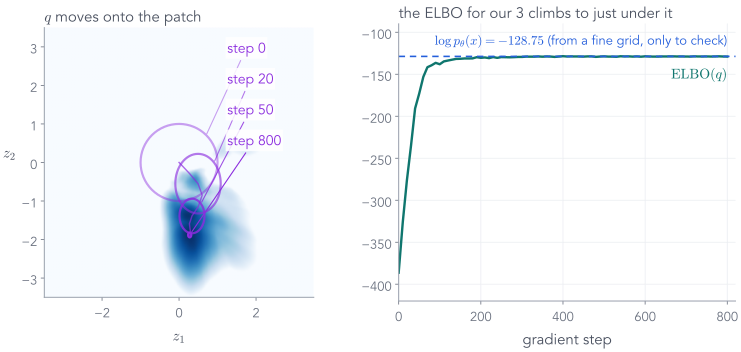
Final ELBO −128.83, just under $\log p_\theta(x) = −128.75$. The gap, $\KL(q\,\|\,\text{posterior})$, is 0.08 nats: $q$ is almost exactly right.
Inside those 800 steps
The two terms pull against each other
| step | reconstruction $\E_q[\log p_\theta(x\mid z)]$ | $-\,\KL(q\,\|\,\text{prior})$ | ELBO |
|---|---|---|---|
| 0 · $q$ is the prior | −386.2 | $-\,$0.0 | −386.2 |
| 20 | −275.9 | $-\,$0.53 | −276.4 |
| 50 | −170.9 | $-\,$2.1 | −173.0 |
| 800 | −122.2 | $-\,$6.73 | −128.9 |
The ELBO is a trade: a $q$ precise enough to rebuild the image, no more precise than it needs to be.
A bonus: with $q$, even $p_\theta(x)$ becomes easy to estimate
Sample codes where the patch is, then reweight
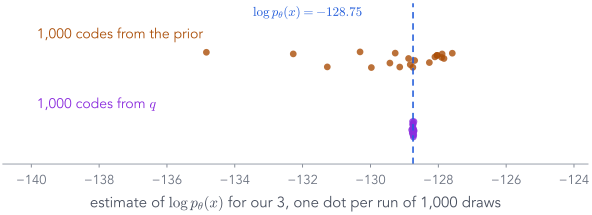
20 runs of 1,000 draws each. From the prior, the estimates scatter from −134.8 to −127.6. From $q$: −128.74, give or take 0.017.
800 steps for one image
Amortised inference: learn to predict $q$
Our 3: ELBO −128.83 by hand in 800 steps, −129.3 from the encoder in one pass. Pay once during training; a little worse, thousands of times cheaper.
Put the pieces together
Encoder + decoder + ELBO = the variational autoencoder
"Variational"
$q$ always depended on the image; now we write it $q_\varphi(z\mid x)$: the best Gaussian under the ELBO, predicted by a network."Autoencoder"
image → encoder → code → decoder → image: the shape from Part 2, now with a cloud for a code.Trained together
Pushing on $\theta$ raises the ELBO mostly by making the data more probable: a better model. Pushing on $\varphi$ shrinks the gap: a better $q$.Kingma & Welling (2014) and Rezende et al. (2014): one network for the likelihood, one for the posterior, one loss for both.
The gap for the encoder's $q$, measured on our 3
Two different KLs, two different jobs
VI by hand closed the gap to 0.08 nats in 800 steps; the encoder's single pass leaves 0.55. That small loss is the price of amortising.
End of Part 5
What we did, and what comes next
What we did
- Goal: minimise $\KL(q\,\|\,\text{posterior})$. It contains $p_\theta(x)$.
- Rearranged: $\log p_\theta(x) = \ELBO + \KL$. Maximising the ELBO minimises the KL.
- ELBO = reconstruction $-\ \KL(q\,\|\,\text{prior})$: both computable.
- VI by hand fits our 3's $q$ in 800 steps; an encoder predicts it in one pass. That is the VAE.
Next: gradients through a random draw
The loss draws $z$ from the encoder's cloud. Part 6: why writing the draw as $\mu + \sigma\eps$ lets gradients reach the encoder.
Part 6 of 7
Backpropagating through a random draw
VI by hand wrote each draw as $m + s\cdot\eps$ without comment. The VAE loss also uses a $z$ drawn from the encoder's cloud, and to train the encoder, gradients must get from the loss back to $\mu$ and $\sigma$ through that draw. Here is why the way we write the draw is the whole trick.
- ✓Distributions and fitting
- ✓Autoencoders
- ✓The probabilistic view
- ✓KL divergence
- ✓Variational inference and the ELBO
- 6Reparameterisation
- 7The VAE on MNIST
The problem
A sampling step sits in the middle of the graph
The trick
Draw standard noise first, then stretch and shift it
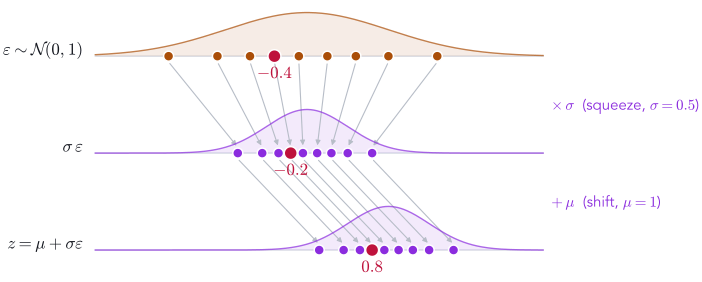
Same distribution as before (the $\mu = 1$, $\sigma = 0.5$ cloud of the Gaussian KL slide). But the randomness now enters as an input, $\eps$, that does not depend on any weights.
The fix
Now the path from the loss to $\mu$ and $\sigma$ is ordinary arithmetic
Chain rule, symbol by symbol
Take $f(z) = z^2$ as the loss
The noise value $\eps$ appears in the $\sigma$-gradient: a draw far from the centre pushes $\sigma$ harder.
Now plug in numbers
$\mu = 1,\ \sigma = 0.5,\ \eps = -0.4$
One more link in the chain
The network outputs $v = \log\sigma^2$, not $\sigma$
Autograd does exactly this. The point of doing it by hand once: no step is magic.
Is one draw enough?
One draw is noisy; the average is exactly right
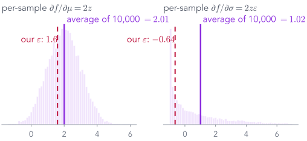
Our single $\eps$ gave 1.6 and $-0.64$. Averaged over 10000 draws: 2.01 and 1.02. SGD only needs the right answer on average.
In PyTorch
Three lines
# encoder outputs, shape [B, 2] each mu, logvar = encoder(x) std = torch.exp(0.5 * logvar) # sigma = exp(v / 2) eps = torch.randn_like(std) # standard normal, no grad z = mu + std * eps # differentiable in mu, std
Why output $\log\sigma^2$? It can be any real number; $\sigma$ must be positive.
Normal(mu, std).rsample() does the same thing; .sample() drops the gradient.
For our 3: $\mu = (0.3,\, −1.93)$, $\eps = (0.62,\, −1.15)$ gives $z = (0.33,\, −1.99)$.
End of Part 6
What we did, and what comes next
What we did
- Sampling $z$ directly cuts the gradient path to $\mu$ and $\sigma$.
- Write $z = \mu + \sigma\eps$ with $\eps \sim \N(0, 1)$: same distribution, randomness as an input.
- $\partial z/\partial\mu = 1$, $\partial z/\partial\sigma = \eps$; one draw is noisy, the average is exact.
- In PyTorch: three lines, or
rsample().
Next: everything together
Encoder, cloud, reparameterised sample, decoder, ELBO: train it on MNIST and follow our 3 through every step.
Part 7 of 7
The variational autoencoder, end to end
Every piece is in place: encoder, cloud, KL, ELBO, reparameterisation. Follow our 3 through the trained network, then generate.
- ✓Distributions and fitting
- ✓Autoencoders
- ✓The probabilistic view
- ✓KL divergence
- ✓Variational inference and the ELBO
- ✓Reparameterisation
- 7The VAE on MNIST
Our 3 through the trained VAE · 1 of 3
Encode: the image becomes a cloud
$\sigma \approx 0.05$ against the prior's $\sigma = 1$: the encoder is very sure where our 3 belongs.
Our 3 through the trained VAE · 2 of 3
Sample: one code from inside the cloud
Our 3 through the trained VAE · 3 of 3
Decode, then score against the real 3
Loss for our 3: $122.3 + 6.97 = 129.3$ nats. Backpropagate it into both $\theta$ and $\varphi$.
Step 3, zoomed in: the reconstruction term
Each pixel is a coin flip with probability $\pi_i$
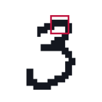
our 3, one 5 × 5 patch
Binary cross-entropy is not a design choice: it is the Bernoulli log-likelihood. Gaussian pixels would give squared error.
All three steps on one page
The whole VAE, for our 3
The same network as tensors
Shapes, layer by layer
The KL term for our 3
A tight cloud is expensive
| coordinate | $\mu_j$ | $\sigma_j$ | $\mu_j^2$ | $\sigma_j^2 - 1$ | $-\log\sigma_j^2$ | $\tfrac12(\text{sum})$ |
|---|---|---|---|---|---|---|
| $z_1$ | 0.3 | 0.047 | 0.09 | $-1.00$ | 6.11 | 2.6 |
| $z_2$ | −1.93 | 0.05 | 3.72 | $-1.00$ | 6.00 | 4.37 |
| total | 6.97 nats |
Most of the cost is $-\log\sigma^2$: the price of being precise. Reconstruction wants precision; the KL resists.
One training step
The whole algorithm fits on a slide
mu, logvar = model.encoder(x) # [B,2], [B,2] z = mu + torch.exp(0.5*logvar) * torch.randn_like(mu) logits = model.decoder(z) # [B,784] recon = F.binary_cross_entropy_with_logits( logits, x.flatten(1), reduction="none").sum(1) kl = 0.5 * (mu**2 + logvar.exp() - 1 - logvar).sum(1) loss = (recon + kl).mean() # per image, then batch opt.zero_grad(); loss.backward(); opt.step()
Encode, reparameterise, decode.
Sum the BCE over all 784 pixels of each image.
Sum the KL over the 2 code coordinates of each image.
Add per image, average over the batch, step both encoder and decoder.
Averaging BCE over pixels instead of summing silently makes the KL 784× stronger.
Training run, test set
Reconstruction falls, KL rises, then both settle
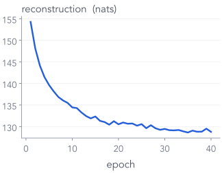
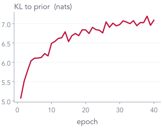
After 40 epochs: reconstruction 128.8 + KL 7.1 = 135.9 nats per test image.
The payoff
Generate: random code → decoder. No encoder.
This is the whole generator. The encoder was scaffolding for training.
48 random codes each
Samples from two VAEs
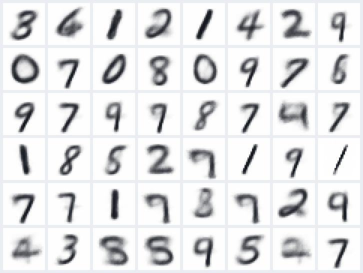
2-number code · reconstruction 128.8

16-number code · reconstruction 57.8
More code dimensions: sharper and more varied, but some samples are odd. Neither is perfect.
Because the code is 2-D, we can draw the whole map
Every point in the code space is a digit
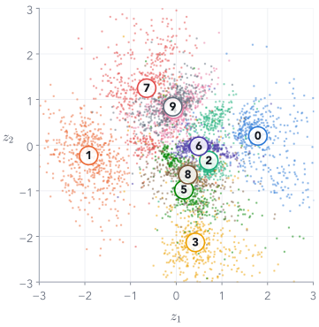
where test digits land
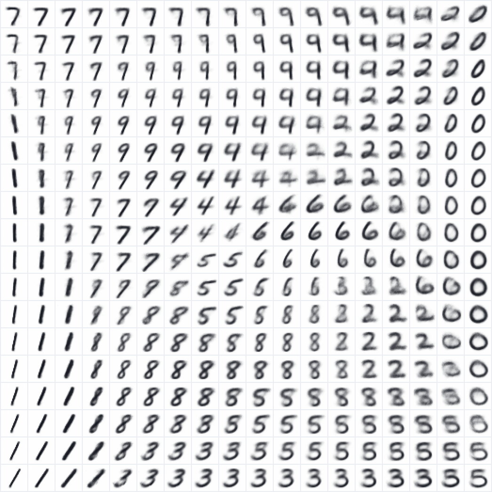
decoded on an 18 × 18 grid, spaced by quantiles of $\N(0,1)$
Neighbouring codes give similar digits, and every region decodes to something plausible.
Try it: the trained VAE, in your browser
The same app, now for the VAE
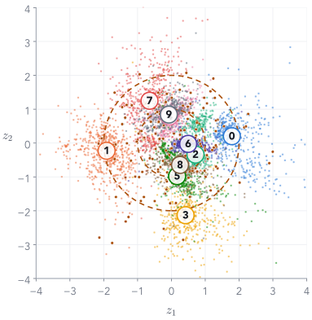
Now random codes from $\N(0, I)$ land among the dots, and almost every one decodes to a digit.
The cover, explained
Walk in a straight line from our 3 to a 7

encode both, take 12 evenly spaced points between their $\mu$'s, decode each (16-number VAE)

the same walk in the 2-number VAE: the line passes through the 5, 8, 4 and 9 regions on the map
The tug of war, made visible
No KL, normal KL, too much KL
autoencoder (no KL)
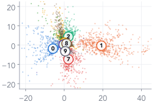

recon 128.1 · no KL term
VAE, loss = recon + KL
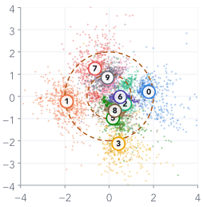


recon 128.8 · KL 7.1
recon + 8 × KL
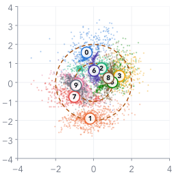

recon 140.4 · KL 3.9
Rows: code space · reconstructions · random samples. Too little KL: samples fail. Too much: everything blurs together.
An honest look
Why are VAE samples blurry?
1. It fits $\KL(\text{data}\,\|\,\text{model})$. Like the wide Gaussian on our bumps, it must cover every training digit, so when unsure it spreads probability.
2. Pixels are independent given $z$. The decoder outputs one probability per pixel. If a stroke could be here or one pixel over, the best $\pi$ is grey in both places.
3. We show $\pi$, the mean, not a sample. A sample would be speckled instead of grey.

$\pi$ (the mean)

a sample
Not a law of nature: bigger codes, better decoders and better likelihoods all sharpen VAEs.
End of Part 7
What we did, and what comes next
What we did
- Our 3: encode to a cloud, sample a code, decode, score: loss $= 129.3$.
- Training: reconstruction falls, KL rises, both settle.
- Generation needs only the prior and the decoder.
- The KL weight trades sharp reconstructions against a usable code space; samples blur.
Next lecture: a different idea
VAEs maximise a bound on $p_\theta(x)$. GANs skip $p_\theta(x)$ entirely: a second network learns to judge real from fake.
Three ways to generate
Same goal, three different training signals
Return to the opening
What you can now explain
the cover: encode a 3 and a 7, walk a straight line between their codes, decode each point.
every code in $\N(0, I)$ decodes to a digit: recon + KL, derived from $\KL(q\,\|\,\text{posterior})$.

a conditional VAE: give the label to the encoder and the decoder, and choose which digit to draw.
Before you leave
Three exit questions
- To generate a new digit with a trained VAE, which parts of the network do you use? The prior and the decoder only: $z\sim\N(0, I)$, then decode. The encoder is for training.
- Two different KL divergences appear in the VAE story. What does each compare, and which one is in the loss? $\KL(q\,\|\,\text{prior})$ is in the loss (6.97 for our 3). $\KL(q\,\|\,\text{true posterior})$ is the gap between the ELBO and $\log p_\theta(x)$ (0.55).
- We never compute $p_\theta(x)$. Why does maximising the ELBO still pull $q$ towards the true posterior? $\log p_\theta(x) = \ELBO + \KL(q\,\|\,\text{posterior})$, and the left side does not depend on $q$. Whatever the ELBO gains, the KL loses.
After the GAN lecture
What if we generate by removing noise, a little at a time?
our 3
→ add a little Gaussian noise, again and again →
pure noise
Adding noise is easy and gives free training pairs. Can a network learn to undo one small step, then walk all the way back from pure noise?
Appendix
A second route to the ELBO
Part 5 reached the ELBO from $\KL(q\,\|\,\text{posterior})$. Many textbooks reach it from $\log p_\theta(x)$ with Jensen's inequality instead. Same bound, one more tool.
Appendix · the ELBO through Jensen · move 1 of 4
Start from what we want
A second route to the bound of Part 5, starting from $\log p_\theta(x)$ instead of the KL.
Appendix · the ELBO through Jensen · move 2 of 4
Multiply and divide by the encoder's cloud
Why bother? Because the next move turns this integral into an average under $q$, and $q$ knows where the patch is.
Appendix · the ELBO through Jensen · move 3 of 4
Read the integral as an average under $q$
Still exact. We now average over codes drawn from the encoder's cloud, right where the patch is.
Appendix · the ELBO through Jensen · a tool for move 4
Jensen's inequality, in one picture
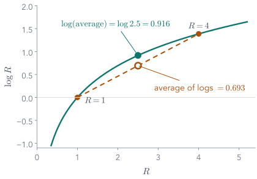
$\log$ curves downwards (it is concave), so every chord lies below the curve.
Two values, $R=1$ and $R=4$:
Appendix · the ELBO through Jensen · move 4 of 4
Swap the log and the average: the only inequality
The same ELBO as Part 5. This route shows it is a bound; Part 5's route also shows the gap is $\KL(q\,\|\,\text{posterior})$.
Further reading
Where to go next
- Lilian Weng, From Autoencoder to Beta-VAE (lilianweng.github.io): the autoencoder family of Part 2
- Jaan Altosaar, Tutorial: what is a variational autoencoder?: the neural-network and probability views side by side
- Kingma & Welling, Auto-Encoding Variational Bayes, arXiv 1312.6114
- Blei, Kucukelbir & McAuliffe, Variational Inference: A Review for Statisticians, arXiv 1601.00670
- Bishop, Pattern Recognition and Machine Learning, §10.1: the ELBO + KL picture of Part 5
- Three YouTube videos on KL divergence that Part 4 draws on (video ids sjgZxuCm_8Q, KHVR587oW8I, tXE23653JrU)
- Stanford CS236 notes on VAEs (deepgenerativemodels.github.io)
- This lecture's code: scripts/train_models.py (all models), scripts/make_figures.py and make_figures_extra.py (every number on the slides)